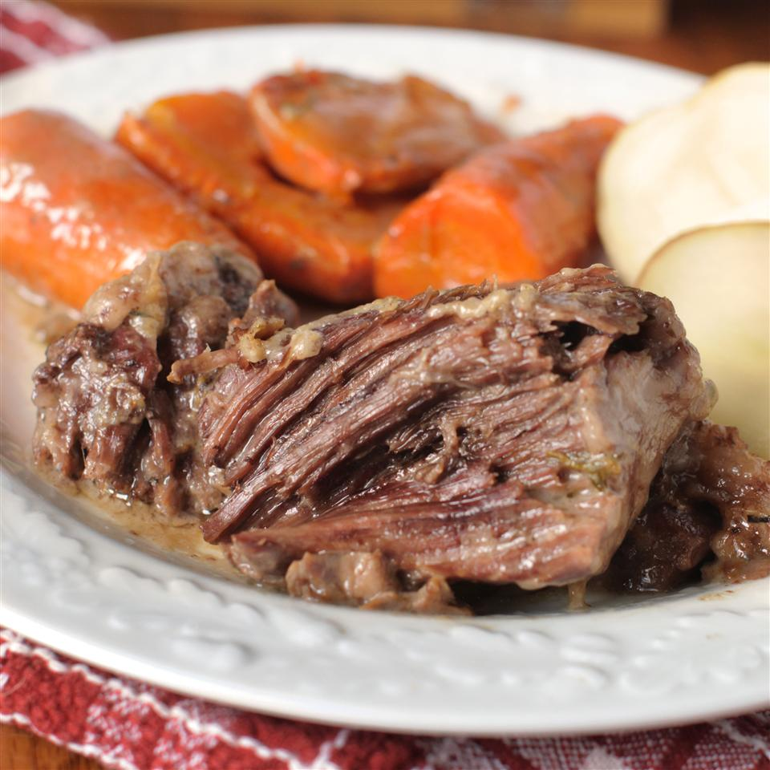

Crockpot Pot Roast

Description
This is an easy oven-baked pot roast with vegetables. The aroma will make you hungry while this delicious roast bakes.
The dish is a very tender cut of roast beef cooked in a slow cooker over a period of hours with subtle wine and rosemary flavors; the
carrots in particular are also wonderful when cooked inside the slow cooker with the beef. At lease, when using my family recipe as opposed to the
internet sourced recipe for demonstration here.
Ingredients
- 2 pounds beef pot roast
- 3 potatoes, peeled and cut into 6 pieces
- 1 large onion, cut into 8 pieces
- 2 carrots, cut into 1 inch pieces
- 2 celery stalks, cut into 1 inch pieces
- 3 cups water
- garlic salt and pepper to taste
- 1/2 cup water
- 3 tbs. cornstarch
- 1/2 tsp. browning sauce (optional)
Steps
- Preheat oven to 300°F
-
Place roast in a large baking pan; arrange potatoes, onion, carrots, and celery around roast. Pour 3 cups water into pan. Season roast with salt, pepper,
and garlic salt. Cover pan with aluminum foil.
-
Bake in the preheated oven until roast is browned and cooked through, about 3 hours. An instant-read thermometer inserted in the thickest part
of the roast should read 145°F. Transfer roast to an oven-safe platter. Remove vegetables using a slotted spoon and arrange around roast.
- Reduce oven temperature to 200°F. Place platter with roast and vegetables in the oven to keep warm.
-
Pour the remaining juices from the baking pan into a saucepan; bring to a boil. Stir 1/2 cup water and cornstarch together in a bowl until smooth;
pour into boiling pan juices. Reduce heat to medium; cook, stirring constantly, until gravy is thick, about 5 minutes; season with salt and pepper.
Stir in browning sauce.